版本： 1.2.0（versionName 1.2.0，versionCode 5，2026-11-23 构建） 安装包： CoherencyLatency-Android-UI-v1.2.0.apk（533,655 B / 521.1 KiB） 适用系统： Android 4.1（API 16）及以上 架构： 同一个 APK 内含 arm64-v8a、armeabi-v7a、x86、x86_64 四个原生库，安装时自动选择 界面： 手机、平板、圆形手表、Android TV 共用一个 APK，自动适配 许可： MIT（基于 CapFrameX 的 MicroBenchX v1.0.5） 本次修订： 64 位库按 16 KB 页面对齐（Android 15+ 设备不再提示兼容性警告）、移除可调试标记、修复触摸屏按钮需要点两次的问题
CoherencyLatency 测量一条缓存行在两个逻辑 CPU 之间来回传递需要多少纳秒。它来自 MicroBenchX v1.0.5 的 CoherencyLatency，本 APK 是它的 Android 原生移植版， 测量核心用 C++ 写成（libclbench.so），外面套一层轻量 Java 界面：
界面长这样（手机模拟器截图）：
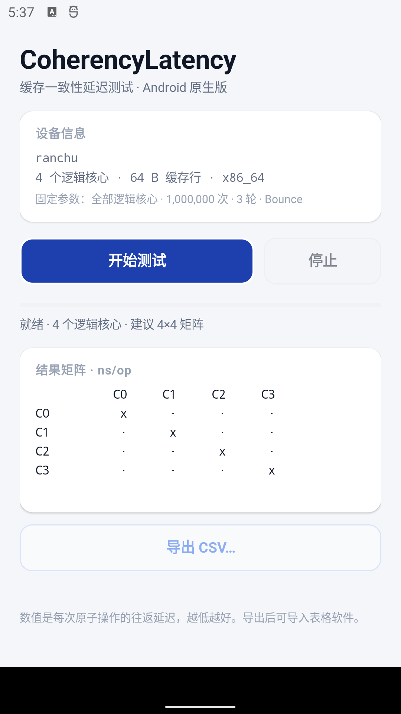
任选一种方式把 APK 传到设备：
adb install（调试用）：adb install -r CoherencyLatency-Android-UI-v1.2.0.apkAndroid 4.1~7：设置 → 安全 → 允许「未知来源」（4.x 在「设置 → 安全 → 未知来源」）。
Android 8 及以上：点开 APK 后系统会提示「为了安装此应用，请允许此来源」， 打开对应文件管理器/浏览器的开关，返回后继续安装即可。
Android 4.1~4.4 上没有系统的「保存到…」文件选择器，导出 CSV… 按钮会直接把文件 存到应用私有目录并提示路径，取文件用数据线或 adb pull（见 6.5 节）。
电视通常没有文件管理器，推荐用 adb 安装：
adb connect 192.168.1.50:5555 # 电视开启「网络调试」后；USB 调试也可
adb install -r CoherencyLatency-Android-UI-v1.2.0.apk装好后在电视的「应用」列表里会出现 CoherencyLatency（带 TV 横幅）。 部分品牌电视会限制第三方 APK，需要在开发者选项里允许「未知来源」或关闭安装校验。 电视没有触摸屏，全程用遥控器操作，见 3.4 节。
手表用 adb 安装（先在手表开发者选项里开启「ADB 调试」，USB 或 Wi-Fi adb 均可）：
adb install -r CoherencyLatency-Android-UI-v1.2.0.apkAPK 里已声明 com.google.android.wearable.standalone = true，可以独立运行。 部分手表系统对第三方 APK 有额外限制，装不上时请以实际系统提示为准。 圆形表盘的布局是按 454×454 圆形屏幕做的，见 3.3 节。
桌面出现蓝色矩阵图标 CoherencyLatency，点开即可。首次启动约 1 秒。
如果提示「应用未安装」或「签名不一致」：设备里可能装过另一份同包名 （
com.ddyibb.coherencylatency）的测试包，先卸载旧的再装。 本 APK 使用 Android 调试证书签名，只用于本地测试分发，不上架应用商店。
| 项目 | 支持范围 |
|---|---|
| 系统版本 | Android 4.1（API 16）～ Android 15 |
| 32 位 ARM | armeabi-v7a，Android 4.1+ 老手机、老电视盒子 |
| 64 位 ARM | arm64-v8a，2015 年以后的主流手机/平板/电视 |
| 32 位 x86 | x86，老 Atom 平板、x86 模拟器 |
| 64 位 x86 | x86_64，x86 模拟器、Chromebook |
安装时系统按设备的 ABI 自动挑选对应原生库，用户不需要选。四个 ABI 打包在同一个 APK 里， 所以文件比只带 arm64 的包大一些，但没有额外权限、没有额外依赖。
64 位原生库（arm64-v8a、x86_64）的 ELF LOAD 段按 16 KB 页面对齐（p_align = 0x4000）， 所以在 Android 15 及以后支持 16 KB 页面大小的设备上不会再出现「此应用不符合 16 KB 对齐要求」 的兼容性提示；32 位库保持 4 KB 对齐，以兼容老设备。APK 本身不再带 debuggable 标记， 安装时不会提示「可调试应用」。
Android 4.1 实测截图（480×800 模拟器，API 16）：
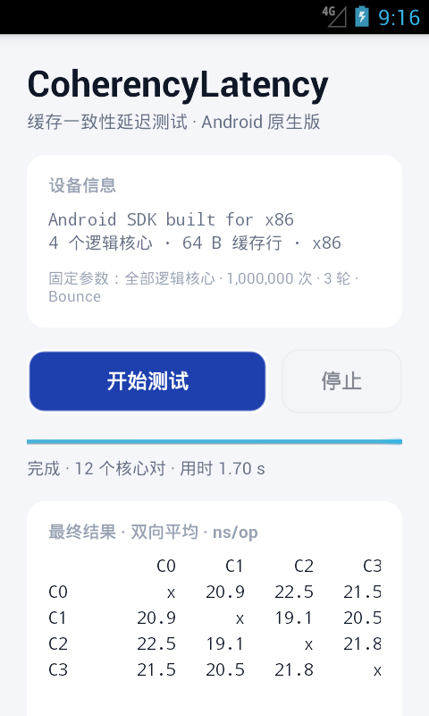
Android 4.1 上界面用的是系统自带的 Holo 主题（Android 5.0+ 自动换成 Material）， 功能、矩阵、CSV 与高版本完全一致。
界面会跟随系统的深色模式：系统切到深色后，背景、卡片、文字、边框和进度条一起换成深色配色，热力矩阵的绿→黄→红刻度和色条保持不变（它们是数据刻度，不随主题变）。切换主题时 Activity 会重建，正在跑的测试会被中断，建议跑之前先确认主题。
从上到下：
| 区域 | 内容 |
|---|---|
| 设备信息 | 机型、逻辑核心数、缓存行大小、ABI。这些值由原生层读取，不是猜的。 |
| 固定参数 | 全部逻辑核心 · 1,000,000 次 · 3 轮 · Bounce。这一版不提供调节项，打开即可测。 |
| 开始测试 / 停止 | 开始后「停止」才可用；停止会保留已完成的部分结果。 |
| 进度行 | 例如「测量中 4/12 · C1↔C0 33.7 ns · 用时 4.8 s」；绑核失败时显示「C1↔C0 N/A（绑核失败）」。 |
| 结果矩阵 | 实时刷新，单位 ns/op；未测的格子显示 ·，对角线显示 x，绑核失败显示 N/A。 |
| 导出 CSV… | 手动选择保存位置（系统文件选择器）。 |
平板横放、宽度达到 600dp 时自动切成左右两栏：
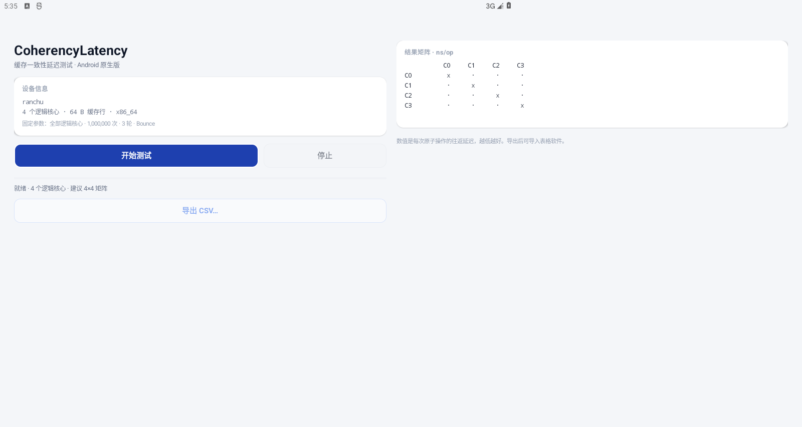
平板竖放时仍是单列（与手机相同）。截图使用 1600×1000、160dpi 的模拟器配置， 真机平板上字号会按系统缩放，实际观感通常比截图更大。
手表上首屏只放最常用的内容，保证 454×454 的圆形表盘内能看到开始按钮：
CoherencyLatency
缓存一致性测试
[ 开始测试 ] [ 停止 ]
──────────────
就绪 · 4 核 · 4×4 矩阵设备信息、结果矩阵和导出按钮在下方，手指上下滑动查看。圆形预览图里圆外的黑色 只是截图遮罩，实际屏幕是圆的：
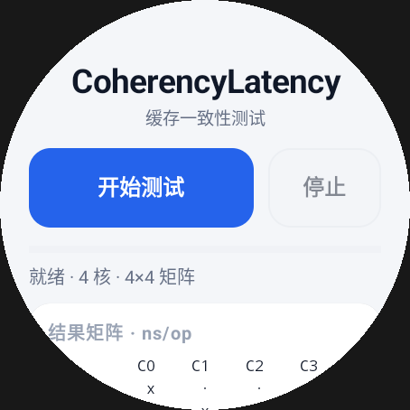
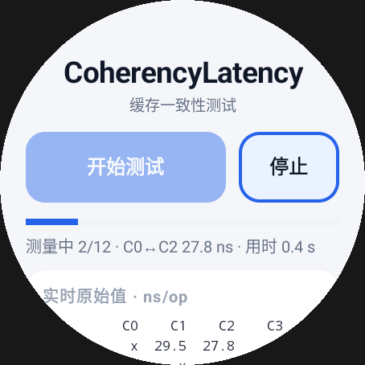
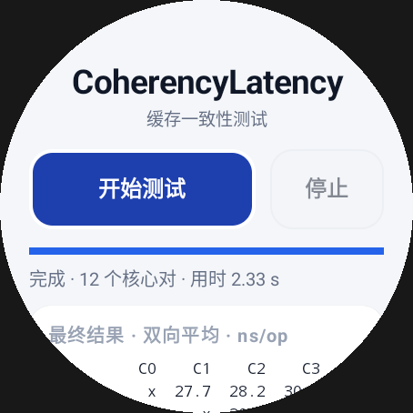
矩阵在圆底会被自然截断，继续向上滑动就能看到完整的 4×4 矩阵和 导出 CSV… 按钮：
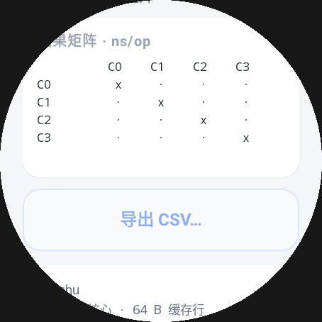
Android TV 上界面按 1.7 倍放大，并用左右两栏铺满 16:9 屏幕：
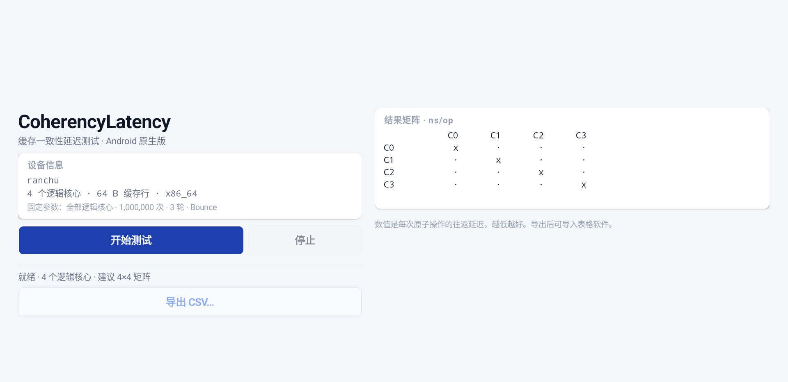
遥控器操作：
| 按键 | 作用 |
|---|---|
| 方向键 | 在按钮之间移动焦点，当前焦点有蓝色描边/底色 |
| 确定 / OK | 按下当前按钮（开始、停止或导出） |
| 返回 | 关闭系统文件选择器，回到主界面 |
启动后焦点自动落在 开始测试；运行中自动落到 停止；跑完后自动落到 导出 CSV…。 所以最常见的流程只需要按两次「确定」：开始 → 等完成 → 导出。
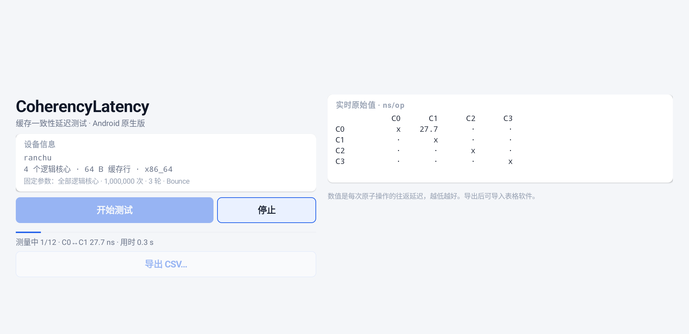
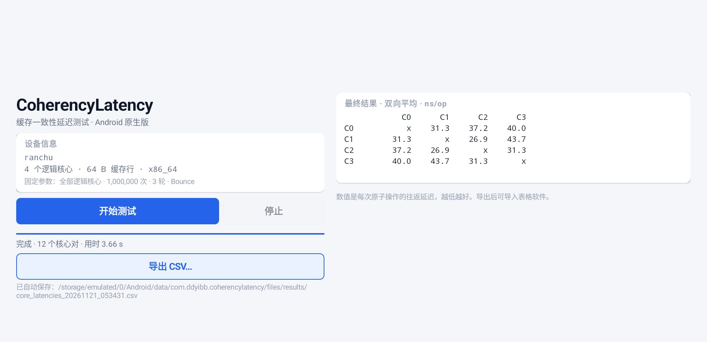
以上 TV/手表截图是在同一台手机模拟器上用调试参数切换形态后截的，分辨率和布局 与真实设备一致；真实电视的焦点样式、系统文件选择器外观可能略有不同。
参数固定为默认值（全部逻辑核心 / 100 万次 / 3 轮 / Bounce），直接点 开始测试 即可。
运行中会看到实时进度和逐渐填满的矩阵：
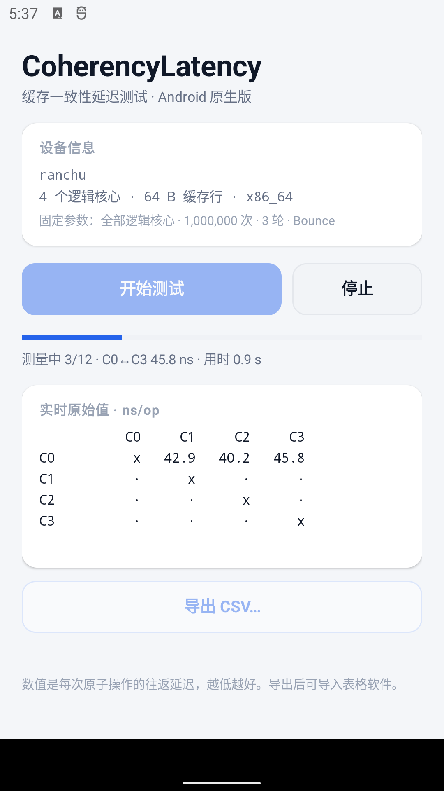
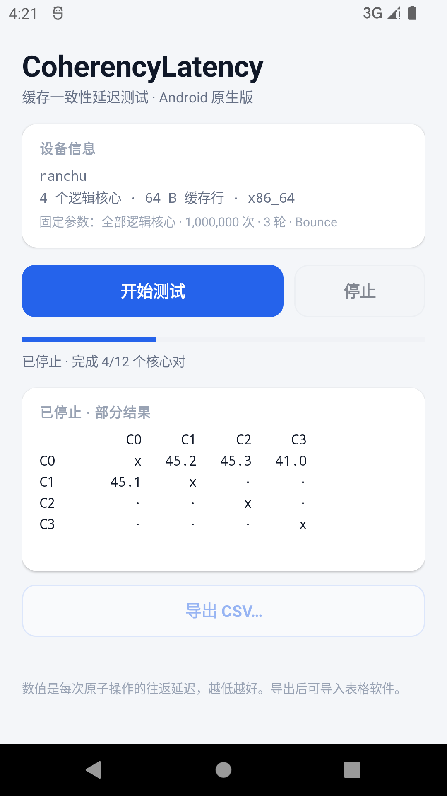
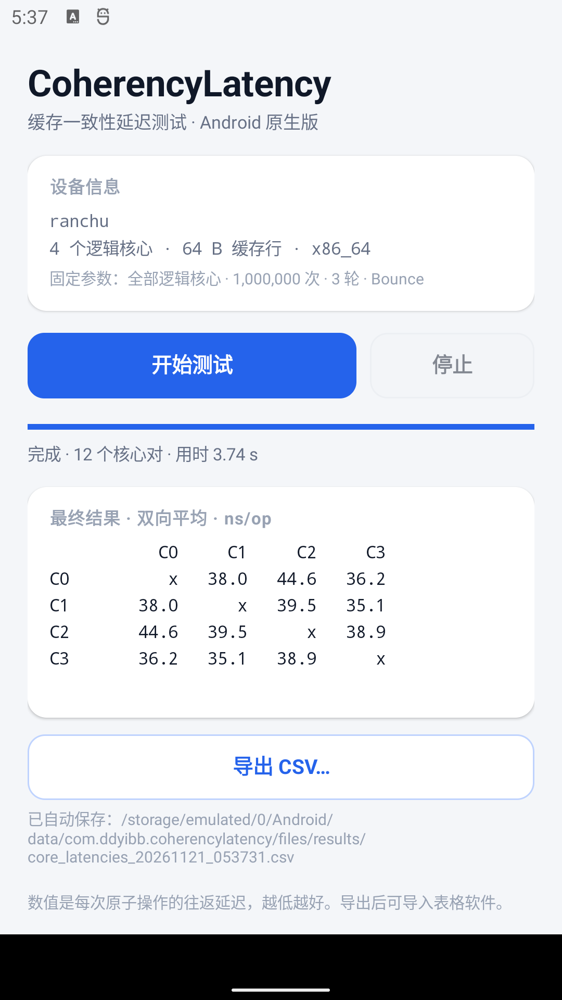
在手表上，开始按钮就在首屏；在电视上，按遥控器「确定」即可开始。
C0 行 C1 列和 C1 行 C0 列最终相同；x（自己到自己没有意义），没测的格子是 ·；N/A 表示这个核心对绑核失败：至少一个线程没有真正待在请求的 CPU 上，数值不可用；它不是 0，也不是「延迟特别高」；
绑核失败时的矩阵长这样（这里把 CPU3 置为离线制造失败，C3 行列全部是 N/A，其余核心对照常出数）：
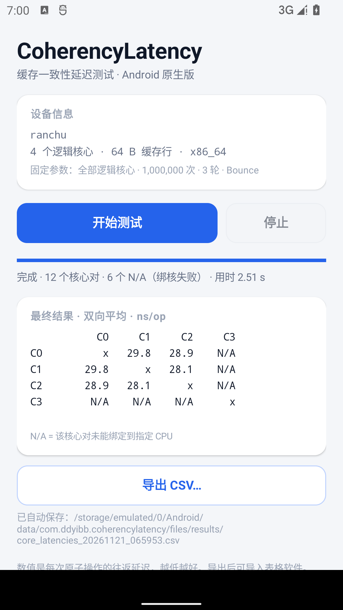
注意这不是「物理核心 i ↔ 物理核心 j」的精确延迟。 Android 的 sched_setaffinity 可能被 cpuset、离线核心或厂商调度器拒绝。本次构建会检查实际 CPU，无法保持绑定的核心对在矩阵和 CSV 里写 N/A，其余核心对照常完成。 即使绑定成功，矩阵下标仍是逻辑槽位，适合横向对比同一台设备上的变化 （例如大小核差异、降频前后），不适合拿两个型号的设备直接比绝对值。
每次跑完会自动保存一份到应用私有目录：
/sdcard/Android/data/com.ddyibb.coherencylatency/files/results/core_latencies_YYYYMMDD_HHMMSS.csv界面底部会显示完整路径。卸载应用时这个目录会一起删除。
core_latencies_<时间>.csv，可改；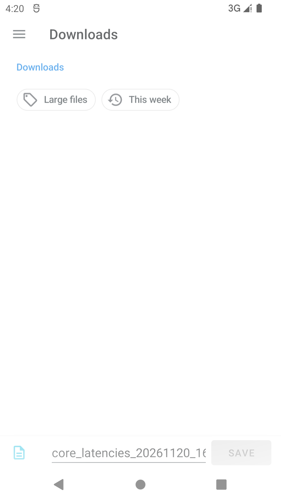
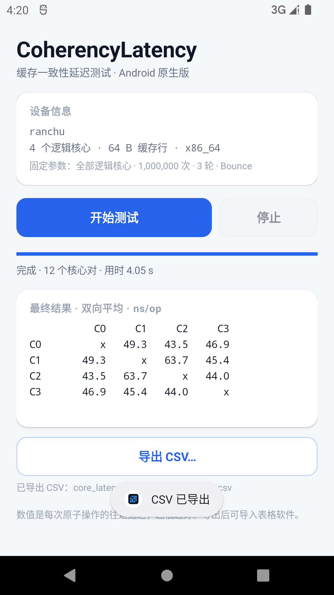
导出的文件与自动保存的那份内容完全相同（可用 SHA-256 比对）。导出不需要存储权限， 因为走的是系统 SAF 选择器。电视/手表上没有文件管理器时，选择器仍由系统提供。
adb pull /sdcard/Download/core_latencies_20261120_131055.csv分号分隔，第一行第一格为空，随后是 Core 0 … Core N-1；对角线写 x：
;Core 0;Core 1;Core 2;Core 3
Core 0;x;33.8422;34.914;34.1536
Core 1;33.8422;x;32.401;31.998
Core 2;34.914;32.401;x;30.775
Core 3;34.1536;31.998;30.775;x数值有效位数约 6 位（%.6g），与 macOS / Windows / CLI 版输出格式一致， 可直接用 Excel、Numbers、Python pandas.read_csv(sep=';') 打开。 若某个核心对绑核失败，该对的两个方向都写 N/A（CSV 里不是 0）。
这些老系统没有 SAF 文件选择器，也拿不到 /sdcard/Android/data/...，文件会写进应用私有目录：
/data/data/com.ddyibb.coherencylatency/files/results/core_latencies_YYYYMMDD_HHMMSS.csv界面底部会显示这个完整路径。取回电脑用 adb（不需要 root）：
adb shell run-as com.ddyibb.coherencylatency cat files/results/core_latencies_20261121_091632.csv > core_latencies.csv或者先 adb shell run-as com.ddyibb.coherencylatency ls files/results 看有哪些文件。 在 4.x 上点 导出 CSV… 只是再存一份到同一目录并提示路径，不会弹文件选择器。
这一版固定使用默认参数：
| 参数 | 固定值 |
|---|---|
| 核心数 | 全部逻辑核心（设备报告多少就用多少） |
| 迭代次数 | 每个线程每轮 1,000,000 次原子操作 |
| 采样轮数 | 3 轮，最终取最快的一轮 |
| 模式 | Bounce 争用（两个线程抢同一条缓存行） |
核心数是 n 时共有 n × (n-1) 个有序核心对：4 核 12 对（模拟器约 2.5~4 秒）， 8 核 56 对，12 核 132 对。核心越多耗时越长，手机发热或后台任务多时也会变慢。 需要中途结束就点 停止，已完成的格子会保留。 若某个核心当前离线（热插拔）或被系统 cpuset 排除，涉及它的核心对会显示 N/A， 其余核心对仍会跑完。
Q：为什么没有核心数、迭代次数等选项？ A：这一版固定使用默认参数（全部逻辑核心、100 万次、3 轮、Bounce），打开点开始即可，避免误调参数。
Q：数值每次都不一样。 A：正常。设备有温控、后台任务、大小核迁移，同一台机器相邻两次差几纳秒很常见。 想对比就固定参数、连续测 3 次取中位数。
Q：为什么有格子是 N/A？ A：这个核心对没有真正绑定成功。常见原因有：某个 CPU 正处于离线/热插拔状态、系统 cpuset 把应用限制在部分核心、厂商调度器拒绝或忽略了 sched_setaffinity、模拟器的 CPU 配置不完整。N/A 表示该对数值不可用，不是延迟高，也不是 0。其余核心对仍会 正常完成；在设备空闲、屏幕点亮、性能模式下重测，或换一台没有核限制的设备再试。 如果所有格子都是 N/A，说明当前进程拿不到任何一个请求的核心，通常是系统级限制。
Q：Bounce 和 Owned 差多少？ A：Owned 一般明显更高，因为它有两次跨缓存行访问；具体倍数取决于 SoC 和缓存层级。 这一版 APK 固定 Bounce，不提供 Owned 切换。
Q：按钮点一下没反应，要点两下？ A：1.2.0 之前的构建在触摸屏上会这样：第一次点按只把焦点移到按钮上。1.2.0 已修复， 单击即生效；如果你还在旧版本，请重新安装当前 APK。
Q：测试中途失败，矩阵只出了一部分？ A：1.2.0 起单对超时或绑核失败只会把该对标记为 N/A，其余核心对继续跑完，不再整张矩阵作废。 若大量出现，先让设备空闲、亮屏、切性能模式再测。
Q：测到一半能停吗？ A：可以。点「停止」后线程会退出，已完成的格子保留，标题显示「已停止 · 部分结果」。
Q：点导出没反应 / 保存失败。 A：确认在系统文件选择器里选了目录并点了 SAVE；某些定制系统会二次确认。若仍失败， 用界面上的自动保存路径通过数据线取文件。
Q：安装被 Play Protect 拦截。 A：这是调试签名的自编译应用，选择「仍要安装」即可；不放心可以自己从源码构建。
Q：需要 root 吗？需要联网吗？ A：都不需要。APK 没有申请任何权限（包括网络权限）。
Q：模拟器上测的值能代表手机吗？ A：不能。模拟器跑在 PC 上，缓存层级和调度都与真机不同，只适合验证功能。 真机数值才有参考意义。
Q：平板/电视上字太小或太大？ A：布局按屏幕宽度和 dpi 自动切换：平板横屏两栏、电视 1.7 倍放大、手机单列。 不同厂商的系统字体缩放也会影响观感；电视上建议用遥控器靠近看。
Q：手表上找不到矩阵或导出按钮？ A：手表首屏优先放开始/停止，矩阵和导出在下方；手指上下滑动即可，矩阵右侧和底部还可以继续滚。
Q：电视遥控器怎么开始？ A：启动后焦点在「开始测试」，按遥控器中间的 OK/确定 即可；跑完后焦点会自动跳到「导出 CSV…」。
Q：手表/电视怎么安装？ A：两者都推荐 adb install，见 2.2 / 2.3 节。电视需要在开发者选项允许未知来源， 手表需要开启 ADB 调试。
Q：为什么手表预览图四角是黑的？ A：那是圆形遮罩预览图，黑色部分不在真实屏幕内；真机是完整圆形表盘。
Q：这个 APK 支持横屏吗？ A：支持。手机/平板旋转后按新宽度重新布局；平板横屏会自动切成左右两栏。
Q：和命令行版有什么区别？ A：测量核心、参数含义、CSV 格式完全相同；APK 只是多了一层图形界面和实时显示。 命令行版（Termux/adb）仍在 03-Android-arm64-armv7-x86-x86_64 文件夹里，适合脚本化批量跑。
以模拟器（4 核 / 100 万 / 3 轮 / Bounce）跑完后的 dumpsys meminfo 为例：
| 项目 | 数值 |
|---|---|
| Native Heap Pss | 16,232 KB（约 15.9 MiB） |
| Dalvik Heap Pss | 1,446 KB（约 1.4 MiB） |
| 总 PSS | 42,609 KB（约 41.6 MiB / 42.6 MB） |
| 总 RSS | 127,388 KB（约 124.4 MiB） |
测量线程只在测试期间存在，跑完即回收；矩阵是 O(n²) 的浮点数组，4 核只有 16 个 float。 CSV 单文件约 150~200 字节（4 核）。上述数值会随系统版本、厂商定制和屏幕分辨率变化。
APK SHA-256：
060e8dbda2bcfb83bcba9027b882c922119c558bf2adaa3ebff3abd21cc31e56设备上可用 Termux 校验：
sha256sum CoherencyLatency-Android-UI-v1.2.0.apk源码在 Android-移植/app/：
app/
├── AndroidManifest.xml
├── build_apk.py 一键构建（无需 Gradle）
├── java/.../MainActivity.java 界面、响应式布局与固定参数
├── java/.../NativeBench.java JNI 声明
├── jni/clbench_jni.cpp 测量核心（bounce/owned、线程复用、O(n²) 矩阵）
├── res/ 图标、TV 横幅与字符串
└── tools/ 图标生成、圆形预览图、文档截图整理构建环境：NDK r21e（D:/ndk21/android-ndk-r21e，能出 API 16 的 32 位库）、Android SDK build-tools 31.0.0、platforms/android-31、JDK 17。 在 Android-移植/app 目录执行：
python build_apk.py脚本会依次编译四个 ABI（arm64-v8a / armeabi-v7a / x86 / x86_64）的原生库并 strip、 生成图标、aapt2 编译资源、javac + d8 生成 dex（--min-api 16）、打包、zipalign 对齐并用 调试证书签名，最终在 Android-移植/ 下生成 APK。
桌面长按图标 → 应用信息 → 卸载；或 设置 → 应用 → CoherencyLatency → 卸载。 应用私有目录里的历史 CSV 会一并删除，需要保留的先导出。
LICENSE。